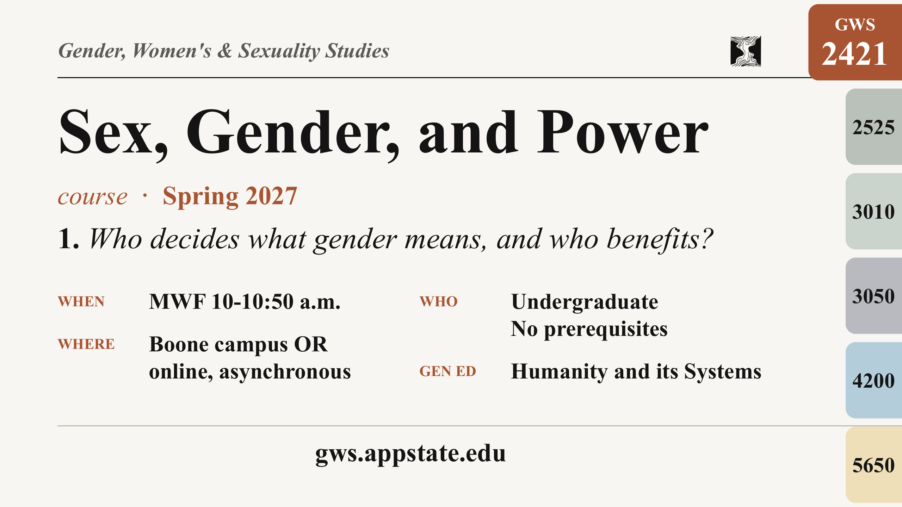

As the communications intern for App State's Gender, Women's & Sexuality Studies program, I write, design, and organize the materials students and faculty use to find the program and find their way around it: the logo, the slides on campus screens, the cards handed out at events, and the writing on the website.
The internship runs through the 2026-27 academic year. A promotional video for the program is in production for spring.
Program Logo
GWS Program Logo
A negative-space mark built to be read more than one way. I drew a river running between two land masses. Other people have seen a tree, a flame, or simply flow, and every reading is right.
That openness is the point. GWS is interdisciplinary and fluid, and it never looks the same twice. The mark comes in three lockups, so it works as a corner badge on a slide, a header on a card, or the full program name in print.
My Role: Concept, drawing, and final files.
Campus Screens
Course Slides for Scala Digital Signage
Scala runs the TV screens around App State's campus. GWS uses it to advertise next semester's courses, so each slide has a few seconds to say what the class is, when it meets, and who can take it.
Every layout here was built entirely in Google Slides, with no design software, so anyone in the program can open the file and update it. Five directions for the same course, and each course keeps its own color from one semester to the next.



My Role: Design, copywriting, and the how-to notes that ship with the file.
Walk Cards
Walk Card Concepts
Business-card-size handouts that give someone a reason to keep the card and a QR code to act on it. Three concepts, each with a different way in: a dog, a quiz, and a plain answer.
Skipper


You might be a GWS major


So what's GWS?


My Role: Concept, copywriting, and design.
Stickers

GWS Bubble Letters
Fall 2026
Writing
Writing for the Program
I rewrote more than a dozen pages of the program's website in AP style, from the About page through every undergraduate and graduate program of study. The career page is now organized around the questions students actually ask, such as where majors end up working and what they earn, each answered with a named source. I also write the short student blurbs on the program's Student Profiles page, and a full-length feature profile of a GWS major.
Read the Feature ProfileIn Production
Program Promo Video
A promotional video for the program, shooting next semester. Photography for it is under way now.